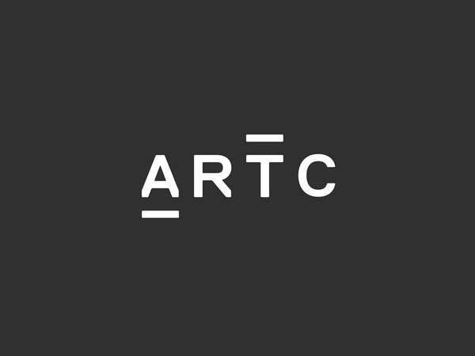
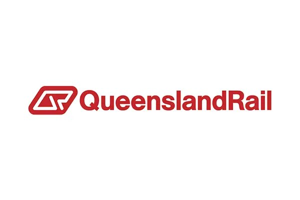
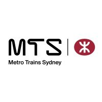
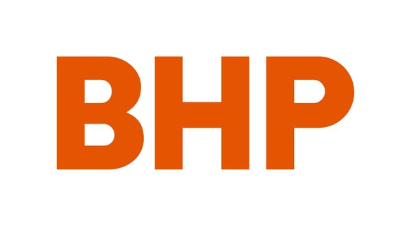

Avetta Monthly Pack in 3 seconds
Verified hours, TRIFR, LTIFR, incident summary, D&A records, and insurance status — assembled and pushed to the Avetta API in one click. No spreadsheets, no re-entry.
Replace two to five days of manual compliance admin every month. GPS-verified timesheets, FAID fatigue scoring, RIW-aware medicals, ESG reporting, and Avetta packs generated in three seconds — all in one platform purpose-built for rail subcontractors.
Hunter Valley reference dataset · used in product readiness & AusRail demos
A sample-month workload — six reference workers, three Tier 1 contract patterns (Aurizon Muswellbrook, ARTC Broadmeadow, Network Inspection Hunter Valley) — used in product readiness, AusRail 2026 demos, and pilot-conversion conversations. These are the numbers the platform generates against that dataset.
Demo dataset — not live customer data. Pilot deployment available for AusRail 2026.
Built with network-specific compliance rules for




2,400 Australian rail subcontractors are still doing this manually. ParallaxOS replaces the spreadsheets, paper forms, and email chains with a single sovereign system that holds up to ONRSR scrutiny.
Verified hours, TRIFR, LTIFR, incident summary, D&A records, and insurance status — assembled and pushed to the Avetta API in one click. No spreadsheets, no re-entry.
Every timesheet is GPS-stamped at clock-on and clock-off, then SHA-256 sealed at submission. Tamper-evident and ONRSR-defensible.
Workers are blocked from rostering when FAID limits, RIW cards, or medical clearances lapse. The conflict is caught at assignment — not at the gate.
Auto, Compliance, Documents, ESG, Awards, Fatigue, Training, Medical, and Pre-Start agents — each an expert in one part of your business. Ask in plain English, get cited answers.
Network-aware medical booking. Cat 1 ECG and pathology reminders 48 hours prior, every Authorised Health Professional GPS-sorted by distance with live RIW Direct Upload status.
Approved timesheets flow into invoices with night-shift penalties (125% / 150%), overtime (150% / 200%), travel and meal allowances all applied automatically. One tap to sync.
The platform stays fully functional offline — pre-starts, clock on/off, D&A tests, and incidents are sealed locally and auto-synced when signal returns. Built for tunnels.
Scope 1 and Scope 2 emissions auto-calculated from fleet data using Australian National Greenhouse Accounts factors. Daily through yearly reports, one click each.
ParallaxOS adapts to the device and the role — full sidebar admin on desktop, on/off crew approvals on tablet, and a glove-safe shift app on mobile.
Full sidebar navigation, AI command bar, and Avetta auto-push for the people running operations from HQ.
Live GPS map of every worker on site. Pre-start status, FAID score, battery level — all visible in real time.
Everything the rigger needs the moment they wake up — tonight's job, the team, the documents, the gates that must clear.
Ask "Can Mike Davies work ARTC tonight?" and the Auto agent routes it to Compliance. Ask "What's the Sunday penalty for a Safeworking Officer?" and Awards cites the EBA clause and dollar amount.
Routes every plain-English query to the correct specialist agent. The user never has to choose.
RIW cards, medicals, FAID limits, certifications — knows which workers can be deployed where.
Indexes every uploaded SWMS, EBA, and ARTC network rule. Cited answers in two seconds.
Generates GHG reports with fuel breakdown, Scope 1 & 2, carbon intensity, YTD totals.
Reads your Enterprise Agreement and answers penalty-rate questions with exact clause and dollar amount.
Triggers at FAID 75/100 — alerts the supervisor, offers to dispatch an Uber, seals the event.
Surfaces workers with expiring competencies and finds nearby RIW-approved RTOs with course dates.
GPS-sorts every Authorised Health Professional by distance, showing Cat 1/2/3 capability and RIW Direct status.
Guides workers through pre-start checklists offline. Phi-3 Mini on-device for queries when signal drops.
The Avetta Monthly Pack is the supply-chain risk submission that Tier 1 rail clients — Aurizon, John Holland, ARTC — require every month from their subcontractors. It currently takes most operators between two and five days to compile manually.
ParallaxOS assembles the complete pack — verified hours, TRIFR, LTIFR, incident summary, D&A records, and insurance status — in three seconds, and pushes it directly to the Avetta API on confirmation.
The narrated demo walks through every module on a realistic Hunter Valley reference dataset, with voiceover via the device's built-in text-to-speech. Run it on a screen-share — the whole story plays automatically.
Total runtime: 5 minutes 33 seconds · Voice on/off toggle · Pause and resume without losing position.
Themes that came up repeatedly during user discovery with Australian rail subcontractors, supervisors, and HSEQ managers.
"The Avetta pack takes three days every month. By the time it's submitted, you're already late starting the next one."
"Paper D&A forms get destroyed by rain. Auditors hate it. Digital with GPS and a cryptographic seal — that's what ONRSR actually wants."
"I found out at the gate that one of my workers' RIW had lapsed. Lost the shift. We need the platform to block the assignment four weeks earlier — not flag it after the fact."